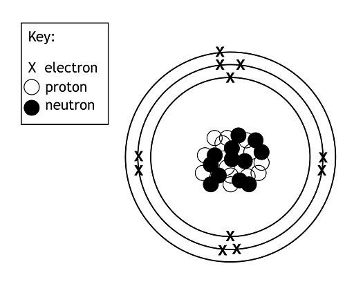
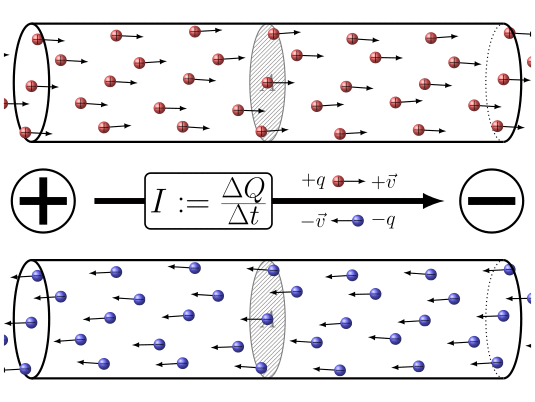

Carga eléctrica
Sesión 1
Diagnóstico inicial
Responde individualmente, sin consultar todavía la teoría. Después compara tus razones con las respuestas.
- ¿Qué partícula puede desplazarse con facilidad por un conductor metálico?
- ¿Qué significa que un cuerpo sea eléctricamente neutro?
- ¿Se consumen las cargas mientras recorren un circuito?
- ¿Coinciden el sentido convencional de la corriente y el movimiento de los electrones?
Contrastar el diagnóstico
- En un conductor metálico pueden desplazarse con facilidad algunos de sus electrones, mientras que los protones permanecen ligados al núcleo de los átomos.
- Un cuerpo es eléctricamente neutro cuando su carga positiva total y su carga negativa total tienen el mismo valor. Esto no significa que carezca de cargas, sino que ambas se compensan.
- Las cargas no se consumen mientras recorren el circuito. El generador les transfiere energía y mantiene su movimiento ordenado, pero la carga eléctrica se conserva.
- Los dos sentidos no coinciden. Por convenio, representamos la corriente desde el polo positivo hacia el negativo por el circuito exterior, mientras que los electrones se desplazan en sentido contrario.
Toda la materia está compuesta por átomos y éstos por partículas más pequeñas. El núcleo del átomo está integrado por neutrones y protones, y alrededor del núcleo se encuentran los electrones. En la siguiente imagen se puede ver una representación esquemática de un átomo de aluminio (13 protones):

La carga eléctrica es una propiedad de ciertas partículas que nos determina su interacción electromagnética. A continuación te dejo un resumen de lo más importante que debes saber acerca de la carga eléctrica:
Tipos de carga
Hay dos tipos de carga eléctrica: positiva y negativa.
- Los protones tienen carga positiva,
- Los electrones tienen carga negativa.
- Las sustancias neutras tienen una cantidad igual de protones y electrones, lo que resulta en una carga total nula.
Conservación de la carga
La ley de conservación de la carga establece que la carga total en un sistema aislado permanece constante con el tiempo.
En otras palabras, la carga no puede crearse ni destruirse, solo puede transferirse de un objeto a otro.
Interacción entre Cargas
Partículas cargadas eléctricamente interactúan entre sí a través de fuerzas eléctricas.
- Cargas del mismo tipo (positivas o negativas) se repelen
- Cargas de tipos opuestos se atraen.
Unidad de medida
La unidad de medida de la carga eléctrica en el Sistema Internacional es el culombio (C). La carga de un electrón es, como podrás imaginar, muy muy pequeña. En concreto es de 1,6·10-19 C. O, dicho de otro modo, un culombio es la carga eléctrica que tienen 6,24·1018 electrones.
La carga eléctrica es un concepto esencial en la teoría electromagnética y es clave para entender fenómenos como la generación de electricidad, la conducción en materiales conductores y el funcionamiento de dispositivos electrónicos.
Corriente eléctrica
La corriente eléctrica es el movimiento ordenado de cargas eléctricas a través de un material. En los conductores metálicos las cargas móviles son electrones; en otros medios también pueden moverse iones u otros portadores. En esta unidad trabajaremos sobre todo con metales, por eso hablaremos a menudo del movimiento de electrones.
Los materiales cuyos átomos tienen más facilidad para perder electrones son los metales. Si colocamos una carga negativa en un extremo de un material metálico y otra positiva en el extremo contrario, los electrones se verán repelidos por la carga negativa y atraídos hacia la positiva. Al tener tanta facilidad para "saltar" de un átomo a otro, se establecerá una corriente de electrones en movimiento (una corriente eléctrica) a través del metal. Esto significa que los metales son muy buenosconductores eléctricos.
En otros materiales, por el contrario, los electrones están muy "atados" a sus átomos y no pueden "saltar" con facilidad. Por lo tanto, aunque coloquemos las cargas positivas y negativas en los extremos, no se producirá ningún movimiento (no habrá corriente eléctrica). Estos materiales (maderas, plásticos, pétreos,...) son aislantes eléctricos.
Sentido de la corriente eléctrica.
Los electrones siempre se mueven desde las cargas negativas hacia las positivas. ese es el sentido real de la corriente eléctrica. Sin embargo, en el diseño de circuitos eléctricos y electrónicos se utiliza el sentido convencional de la corriente eléctrica, que dice que el flujo de cargas es desde el polo positivo al negativo.
En la siguiente animación se puede ver el sentido convencional (arriba) que es el que llevarían unas cargas positivas y el real (abajo) que es el que realmente llevan los electrones:

Esta discrepancia se debe a que la electricidad se utilizaba antes de identificar a su partícula responsable (el electrón) y ver que tenía carga negativa. Antes, se suponía que las cargas que se movían eran positivas y, por tanto, salían repelidas del polo positivo e iban hacia el negativo. Para no tener que cambiar todas las referencias, se sigue considerando eso, pues realmente los cálculos y los circuitos funcionan perfectamente en cualquiera de los dos supuestos.Así pues, para recapitular: siempre consideraremos que la corriente eléctrica sale de los generadores por el polo positivo y vuelve a ellos por el polo negativo.
Intensidad de corriente
Después de comprender qué es la corriente y cuál es su sentido, vamos a cuantificarla. La intensidad permite expresar cuánta carga atraviesa una sección del conductor en un tiempo determinado y relacionar esa descripción con una medida experimental.
La definición de intensidad de corriente eléctrica vendría a ser más o menos así:
La unidad de medida de la intensidad de corriente en el Sistema Internacional es el amperio (A). Un amperio es la intensidad de corriente correspondiente al paso de un culombio de carga cada segundo:
| \[1\ amperio=\frac{1\ culombio}{1\ segundo}=\frac{6,24\cdot 10^{18}\ electrones}{1\ segundo}\] |
Expresando de forma matemática la definición de la intensidad de corriente, obtenemos la siguiente fórmula:
\[I=\frac{q}{t}\]
donde:
- I: intensidad de corriente eléctrica (A)
- q: carga eléctrica (C)
- t: tiempo (s)
Para medir la intensidad de corriente que circula por un punto de un conductor se utiliza un aparato de medida llamado amperímetro. El amperímetro debe colocarse en serie con el conductor por el que circula la corriente a medir.
Ejercicios para practicar el cálculo de la intensidad
En los problemas relacionados con la intensidad de corriente no siempre tendrás que calcular la misma magnitud. En algunos ejercicios conocerás la carga y el tiempo; en otros tendrás que despejar la carga, convertir unidades o calcular primero la carga total a partir del número de electrones.
A continuación encontrarás cuatro ejercicios que recorren esas situaciones paso a paso. Intenta resolverlos antes de abrir la explicación. En cada uno debes identificar los datos, comprobar sus unidades, elegir o despejar la fórmula adecuada y escribir el resultado con su unidad.
- Ejercicio 1. Cálculo directo de la intensidad. Por una sección de un conductor pasan 6 C de carga en 3 s. Calcula la intensidad de la corriente que circula por el conductor.
- Ejercicio 2. Cálculo de la carga y conversión del tiempo. Por un conductor circula una corriente de 0,25 A durante 2 minutos. Calcula la carga eléctrica que ha atravesado una sección del conductor durante ese intervalo.
- Ejercicio 3. Cálculo a partir del número de electrones. En 4 s atraviesan una sección de un conductor 1,248·1019 electrones. Sabiendo que el valor absoluto de la carga de un electrón es |e| = 1,602·10−19 C, calcula primero la carga total que ha pasado y, a continuación, la intensidad de la corriente.
- Ejercicio 4. Conversión de miliamperios. Por un conductor circula una corriente de 80 mA durante 45 s. Calcula la carga eléctrica que atraviesa una sección del conductor y expresa el resultado en culombios.
Comprueba cómo se resuelve cada ejercicio
Ejercicio 1. Los datos son q = 6 C y t = 3 s. Como se pide la intensidad, aplicamos I = q/t. Al sustituir los datos obtenemos I = 6 C / 3 s = 2 A. Esto significa que cada segundo atraviesan esa sección del conductor 2 C de carga.
Ejercicio 2. Conocemos la intensidad y el tiempo, por lo que despejamos la carga en I = q/t y obtenemos q = I·t. Antes de sustituir hay que expresar el tiempo en segundos: 2 min = 120 s. Por tanto, q = 0,25 A · 120 s = 30 C.
Ejercicio 3. Primero calculamos el valor absoluto de la carga total mediante q = n·|e|. Al sustituir, q = 1,248·1019 · 1,602·10−19 C ≈ 2,00 C. Después aplicamos I = q/t: I = 2,00 C / 4 s ≈ 0,50 A.
Ejercicio 4. Antes de operar convertimos la intensidad a amperios: 80 mA = 0,080 A. Como conocemos la intensidad y el tiempo, utilizamos q = I·t. Así, q = 0,080 A · 45 s = 3,6 C.
Test
Resuelve antes de elegir. Comprueba la unidad del tiempo y distingue siempre entre carga, intensidad y número de electrones.